Lugares Populares
Museus, galerias, pontos turísticos, esportes, restaurantes, entre outros.

Theatro Municipal
Projeto pelo arquiteto Ramos de Azevedo no estilo arquitetônico eclético, inspirado na Ópera de Paris e inaugurado em 1911.
Neo Química Arena
Estádio de futebol localizado no bairro de Itaquera, palco do jogo de abertura da Copa do Mundo de 2014.
Jardim Botânico
Fundado em 1928, o local tem o objetivo de mostrar o quanto a natureza é importante, e enfatizar cada vez mais o cuidado que se deve ter com a biodiversidade.
Figueira Rubaiyat
Restaurante icônico que foi construído em volta de uma árvore centenária e tombada pelo pratimônio cultural da cidade, que dá nome ao local.